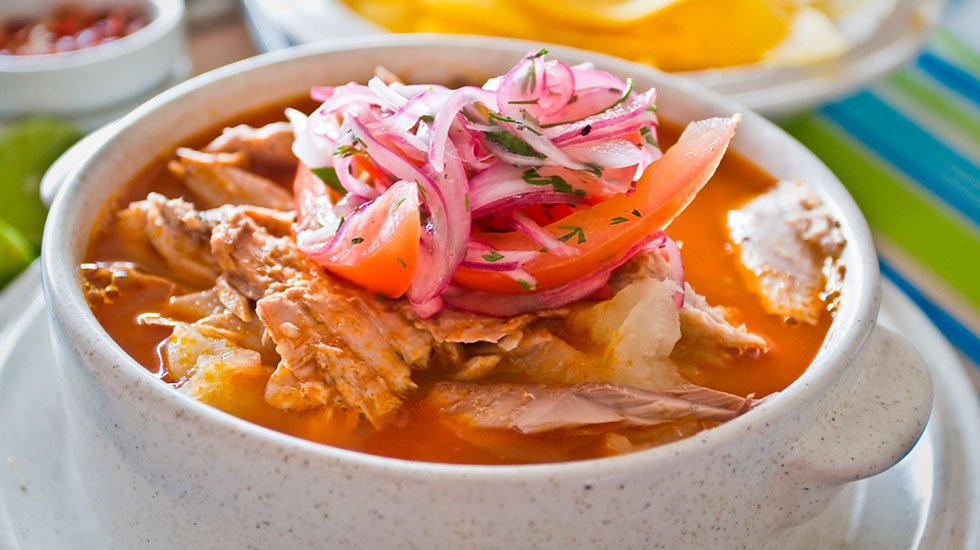

Fish and Onion Soup

Description
A delicious dish from SOuth AMerica, specially good after a night of too many beers. A.K.A The hangover cure
Ingredientes
- Fresh "Bacalao"
- Onions
- A traditional ecuadorian mom to tell you the rest of ingredients
Instructions
- Get the ingredientes
- Go buy some beers
- Enjoy a really nice afternoon/evening and then remember nothing til' the next day
- Ask your sweet mother to prepare you a delicious FIsh and Onion Soup